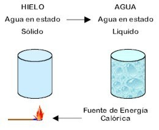
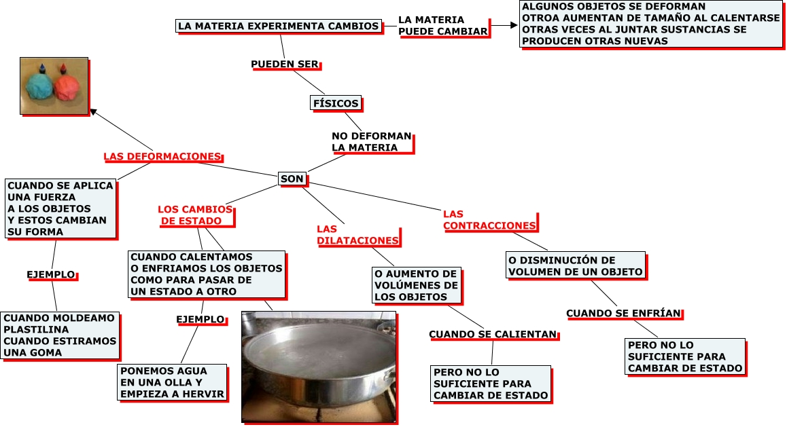

Fenómenos Físicos y Químicos
Dijimos que la materia sufre alteraciones con el tiempo. Ahora bien, los cambios ocurren, pero no todos son iguales.
Cuando el hielo se derrite, se modifica el estado de agregación de la materia (cambio de estado), pero su composición química no sufre alteración (el agua sigue siendo agua). Entonces se dice que ha ocurrido un fenómeno físico.
Cuando una lata se oxida, en contacto con el oxígeno del aire, se convierte en óxidos de aspecto y propiedades distintos. Entonces se dice que ha ocurrido una modificación en la composición química de la materia, que es producto de un cambio o reacción química; fenómeno químico.
Entonces…
|
FENOMENO FISICO es todo cambio superficial que experimenta un cuerpo donde no se modifica la composición de las moléculas que forman el cuerpo. |
Algunos de los fenómenos son:
Los cambios de estado, que son los pasos de sólido a líquido y a gas, o viceversa.
El movimiento, o cambio de la posición que ocupa un cuerpo en el espacio. Las descripciones modernas del movimiento comienzan con una definición cuidadosa de magnitudes como el desplazamiento, el tiempo, la velocidad, la aceleración, la masa y la fuerza.
La fragmentación, que es la división de un cuerpo en trozos más pequeños que conservan su misma naturaleza, como cuando partimos una barra de pan en trozos.
La mezcla de varias sustancias sólidas, líquidas o gaseosas, sin que ninguna de ellas pierda o cambie sus propiedades. Las mezclas son un cambio físico bastante frecuente, que vamos a estudiar más detenidamente.
La dilatación, que es el aumento de volumen que se produce en un cuerpo a consecuencia del aumento de su temperatura.


El siguiente mapa conceptual complementa los conceptos aquí enunciados, observalo haciendo énfasis en las relaciones y diferentes vías existentes.

|
En cambio… Los cambios o fenómenos químicos se producen cuando los átomos tienden a unirse mediante intensas fuerzas electromagnéticas (enlaces) formando sustancias moleculares o cristalinas de propiedades totalmente diferentes a la de los átomos aislados. En los cambios químicos se intercambian gran cantidad de energía. |
Obra publicada con Licencia Creative Commons Reconocimiento Compartir igual 4.0